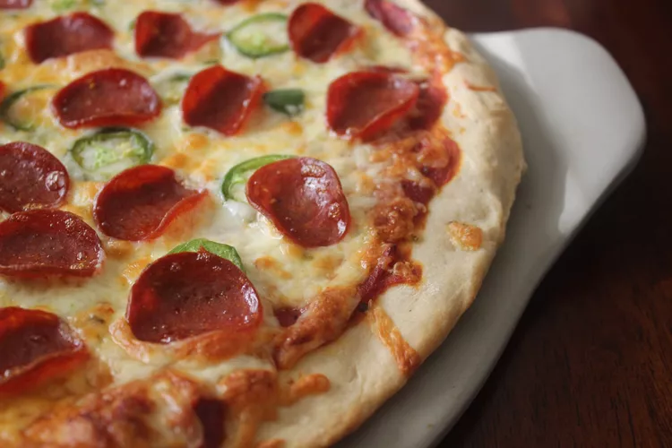

Quick and Easy Pizza Crust

PHOTO: MOMMYLUVS2COOK
How to Make a Homemade Pizza Crust
If you're looking for a homemade pizza crust recipe that's great for beginners, you're in luck.
This top-rated recipe is super easy to throw together on a whim – and it puts the store-bought stuff to shame.
Learn how to make the best pizza crust of your life with just a few ingredients, find out how to shape the dough, and get our best storage secrets.
You need just five ingredients (plus some warm water) to make this super simple pizza crust.
- Yeast: Active dry yeast is a leavening agent, which means it's the ingredient that causes the pizza dough to rise.
- Sugar: To activate your yeast, you'll need to dissolve it in warm water with a teaspoon of sugar.
- Bread Flour: Bread flour is ideal for pizza crust becauseit creates chewier results than all-purpose flour.
- Olive Oil: Olive oil serves a couple purposes when it comes to pizza crust: Not only does it add color and flavor, but it creates a barrier between the oil and water.
- Salt: A little bit of salt goes a long way. Salt adds flavor, strengthens the gluten (creating a chewier crust), and slows down fermentation (resulting in a better rise).
How to Roll Out Pizza Dough
Stretching pizza dough is the most hands-on part of the pizza crust-making process. It takes a little practice, but it's as easy as pie (pun intended). To shape the dough:
- Let the Dough Come to Room Temperature
- Prepare Your Surface With Oil
- Shape the Dough
Soure
Return Home